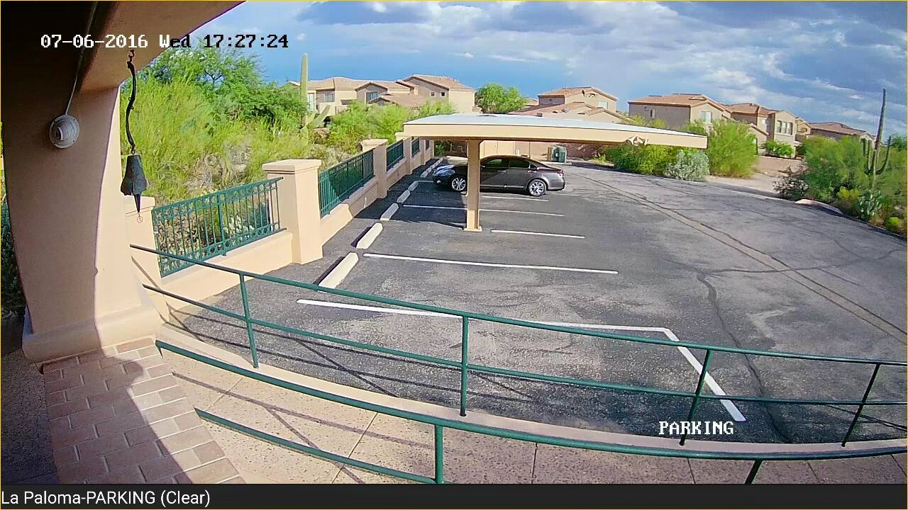
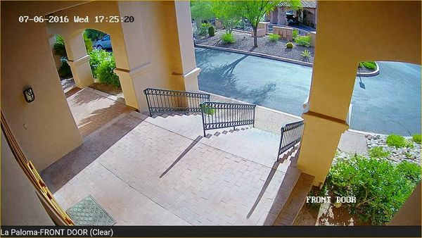

Portfolio
Virtual Guard Tower
The Virtual Guard Tower at Sierra Mining represents the pinnacle of modern security technology, offering an elevated and comprehensive approach to monitoring and protection. This high-tech structure integrates advanced cameras, motion detectors, and real-time communication systems to deliver unparalleled oversight for large or complex sites. Positioned to provide an expansive view, the Virtual Guard Tower enables constant surveillance and rapid response to any potential security threats. Whether used for perimeter security, event management, or ongoing site monitoring, it ensures that every corner of your property is under vigilant watch, providing peace of mind and enhanced safety with every detail meticulously covered.
Virtual Guard Trailer
Introducing our Virtual Guard Trailer — a cutting-edge solution designed to provide unparalleled security and flexibility. This mobile unit is equipped with the latest surveillance technology, offering real-time monitoring and rapid response capabilities wherever it's needed. Ideal for construction sites, events, or temporary installations, our Virtual Guard Trailer ensures that your site remains under constant watch, deterring potential threats and providing detailed reports on any incidents. With 24/7 access to live feeds and expert support, you can rest assured that your security needs are met with precision and reliability, no matter the location or duration.
Stationary Virtual Guard
At Arizona Zipline, our Stationary Virtual Guard System offers a robust and dependable security solution tailored to the unique needs of our adventure park. This cutting-edge system is strategically placed throughout our facilities, providing continuous, high-definition surveillance and real-time monitoring to ensure the safety of both our guests and staff. With advanced analytics and instant alert capabilities, the Stationary Virtual Guard System helps us swiftly address any potential issues, enhance overall safety, and maintain the smooth operation of our zipline experiences. Trust Arizona Zipline’s commitment to excellence in security to keep your adventure worry-free and enjoyable.
Discreet & Vandalism Proof Surveillance
Our discreet vandalism-proof surveillance system is designed to provide robust security while remaining unobtrusive and resilient. Engineered to withstand tampering and harsh conditions, this advanced system ensures continuous, high-quality monitoring without drawing attention. Its compact, durable design allows it to blend seamlessly into any environment, safeguarding your property with minimal visibility. Whether protecting valuable assets or maintaining a secure perimeter, our discreet vandalism-proof surveillance delivers reliable performance and peace of mind, ensuring that your security remains uncompromised and effective, no matter the challenge.
Storage Facility Access Control, Detection, & Surveillance
At Arizona Self Storage, our comprehensive security solution integrates access control, detection, and surveillance to offer unparalleled protection for your valuable belongings. Our advanced access control systems ensure that only authorized individuals can enter the facility, using state-of-the-art keypads, wireless solar powered infrared light walls, and personalized access codes. Complementing this, our high-resolution surveillance cameras provide continuous monitoring and real-time alerts, capturing every detail and ensuring prompt detection of any suspicious activity. With our meticulous approach to security, you can trust that your storage needs are safeguarded by a system designed to provide the highest level of protection and peace of mind.
Solar Powered Virtual Guard System
Our solar-powered Virtual Guard System is the perfect solution for securing remote areas where traditional power sources are unavailable. Harnessing the power of the sun, this innovative system ensures continuous surveillance and monitoring without relying on the grid. Equipped with high-efficiency solar panels and robust battery storage, it provides reliable, uninterrupted security for even the most isolated locations. The system includes advanced cameras and real-time alert features, allowing for effective detection and response to any potential threats. With its sustainable energy source and state-of-the-art technology, our solar-powered Virtual Guard System delivers comprehensive protection while minimizing environmental impact and operational costs.
Virtual Guard For Events
At the recent car show event in Tucson, our Virtual Guard Trailer played a crucial role in ensuring a safe and secure environment for all attendees. Collaborating seamlessly with the Tucson Police Department, the trailer provided real-time surveillance and advanced monitoring capabilities, enhancing overall security and facilitating swift response to any incidents. Equipped with high-definition cameras and instant communication tools, it allowed for comprehensive coverage of the event, deterring potential threats and ensuring a smooth experience for both visitors and staff. Our Virtual Guard Trailer's support highlighted its effectiveness in high-traffic situations, reinforcing our commitment to top-tier security solutions.
Military Grade Alarm Systems
Our Military Grade Encrypted Alarm Systems offer unmatched security and reliability, designed to meet the highest standards of protection for your most critical assets. Engineered with advanced technology and rigorous testing, these alarm systems provide robust defense against intrusions, tampering, and other security breaches. Featuring rapid response capabilities, fail-safe mechanisms, and real-time alerts, they ensure that any potential threat is detected and addressed with precision. Whether for high-security facilities, sensitive operations, or demanding environments, our Military Grade Alarm Systems deliver superior performance and peace of mind, reflecting our commitment to safeguarding what matters most with military-grade excellence.
Wireless Network Design & Installation
At Bonita Agriculture, our wireless network design and installation services are engineered to extend connectivity across vast agricultural expanses, scaling hundreds of miles effortlessly. We specialize in creating high-performance, reliable wireless networks that cover extensive areas, ensuring seamless data transmission and robust connectivity even in remote locations. Our team meticulously designs and installs custom solutions tailored to the unique needs of agricultural operations, integrating cutting-edge technology and advanced infrastructure to support your wireless network requirements. With our expertise, you can enhance operational efficiency, streamline data management, and maintain consistent communication across your entire agricultural enterprise.


Commercial Security
At La Paloma, our commercial security solutions are meticulously designed to provide comprehensive protection for your property and operations. We implement advanced security systems that include state-of-the-art surveillance cameras, access control systems, and real-time monitoring, ensuring that every corner of your commercial space is covered. Our tailored approach addresses the specific needs of your business, enhancing safety and preventing unauthorized access or potential threats. With our commitment to excellence and cutting-edge technology, you can trust La Paloma's security services to deliver peace of mind and safeguard your commercial assets around the clock.
Self Storage Facility Security Systems
At Arizona Self Storage in Nogales, our commercial security solutions are designed to provide unparalleled protection and peace of mind for your storage facility. We deploy a sophisticated array of security measures, including high-definition surveillance cameras, advanced access control systems, and 24/7 monitoring to ensure the safety of your clients' belongings. Our systems are tailored to address the unique needs of self-storage facilities, featuring real-time alerts and comprehensive coverage to deter unauthorized access and promptly address any security concerns. With our commitment to top-tier security technology and vigilant service, Arizona Self Storage is dedicated to maintaining a secure and trustworthy environment for all your storage needs.
Omni-Directional Networking High Powered Antenna
Our Omni-Directional Networking High-Powered Antenna offers exceptional coverage and connectivity, designed to enhance network performance across wide areas. With its advanced technology and high power output, this antenna delivers reliable, 360-degree signal distribution, ensuring consistent and robust network access in all directions. Ideal for large-scale installations or environments with challenging layouts, it effectively extends your network’s reach and improves signal strength, reducing dead zones and enhancing overall connectivity. Whether for commercial, industrial, or high-demand residential applications, our Omni-Directional Networking High-Powered Antenna provides the reliability and performance needed to maintain seamless and efficient network operations.
Construction Security
For NPL National Pipeline, our Virtual Guard Trailer provides cutting-edge construction security solutions to safeguard your pipeline projects. Equipped with advanced surveillance technology and real-time monitoring capabilities, this mobile unit ensures comprehensive protection across extensive construction sites. The Virtual Guard Trailer offers high-definition video feeds, motion detection, and instant alerts, enabling swift responses to any security threats or unauthorized access. Its flexibility and robust features make it an ideal choice for managing the security of critical infrastructure projects, helping NPL National Pipeline maintain a secure, efficient, and safe construction environment at all times.
Convenience Store Security
For Shell and Chevron gas stations, our convenience store security solutions are designed to deliver top-notch protection and peace of mind. Our comprehensive security systems integrate advanced surveillance cameras, real-time monitoring, and sophisticated alarm technologies to safeguard your retail space and fuel operations. With features like high-resolution video recording, motion detection, and remote access, we ensure that every corner of your convenience store is under vigilant watch. Our tailored solutions address the specific security needs of gas stations, enhancing safety for both customers and staff while deterring theft and preventing potential incidents. Trust our expertise to maintain a secure, efficient, and reliable environment at your Shell and Chevron locations.
Construction Security
See, Hear & Talk Directly to Employees.
Our Virtual Guard Security Detection Surveillance System has revolutionized security for Arizona Pipeline, replacing a physical guard who was costing over $12,000 a month. For more than a decade, this sophisticated system has delivered exceptional effectiveness, preventing all criminal activities and offering substantial cost savings. With cutting-edge features like high-definition cameras, motion detection, and real-time alerts, the system provides comprehensive surveillance and prompt responses without the need for on-site personnel. Its long-term success highlights the advantages of virtual security, combining advanced technology with significant financial efficiency to protect Arizona Pipeline's operations.
- © Fortified Security Services 2024